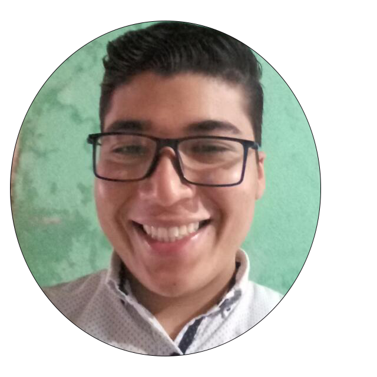
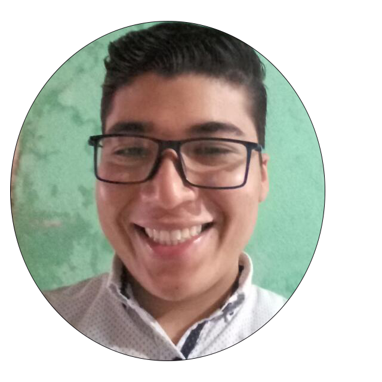

La Familia
Yo creo que las familias son el punto central de nuestra vida, se que dentro de la família podemos encontrar los enseñamientos, que necesitamos para poder seguir las leyes y ordenanzas del evangelio de Jesucristo se también que el padre celestial quiere que podamos volver a vivir con él nuestra familia, se también que las famílias podrán ser eternas.